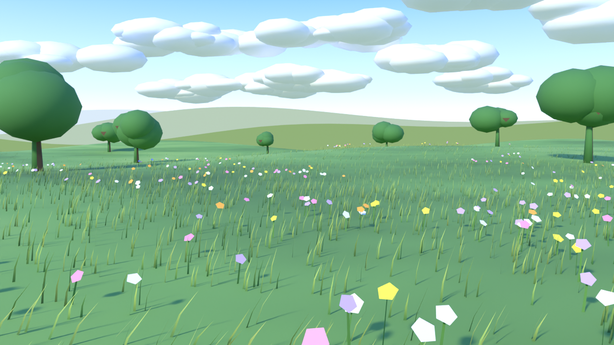

草原の風景（8秒・アニメーション付き）
動画ファイルを直接開く（1280×720、24fps、H.264、約2.6MB）
静止画

内容
- 無料の opencode/deepseek-v4.1-flash-free が、OpenCode V2 で Blender 4.2 のPythonスクリプトを書いて作りました。人間は中身を手書きで直していません（見た目の指摘を1回だけ伝えて修正させました）。
- なだらかな起伏の草原、約3.8万本の草、花340本、木7本、重なる遠景の丘、雲。
- アニメーション: 風で草と花が揺れる、雲が流れる、カメラがゆっくり前進、太陽の色が金色に変わる。
- 描画は Cycles（CPU）、1フレーム約8秒、全192フレーム。
ファイル
データはすべて創作です。外部サービスは使っていません。
← デモ集に戻る